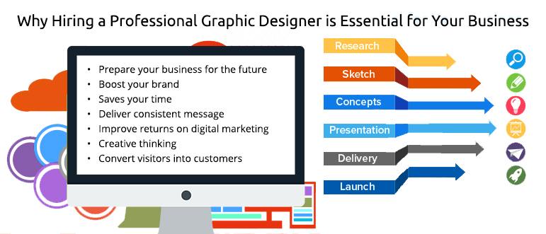
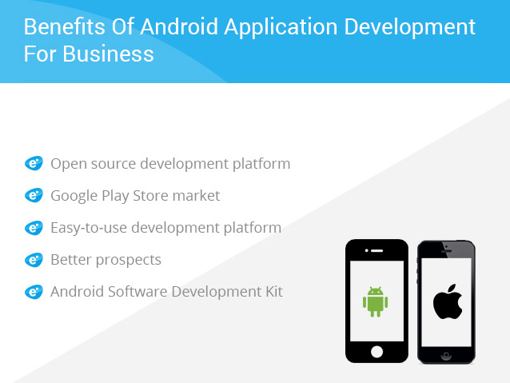

<?xml version="1.0" encoding="UTF-8"?><rss version="2.0"
	xmlns:content="http://purl.org/rss/1.0/modules/content/"
	xmlns:wfw="http://wellformedweb.org/CommentAPI/"
	xmlns:dc="http://purl.org/dc/elements/1.1/"
	xmlns:atom="http://www.w3.org/2005/Atom"
	xmlns:sy="http://purl.org/rss/1.0/modules/syndication/"
	xmlns:slash="http://purl.org/rss/1.0/modules/slash/"
	>

<channel>
	<title>Blog</title>
	<atom:link href="https://www.ehorizon.ae/blog/feed/" rel="self" type="application/rss+xml" />
	<link>https://www.ehorizon.ae/blog</link>
	<description></description>
	<lastBuildDate>Thu, 01 Mar 2018 05:29:32 +0000</lastBuildDate>
	<language>en-US</language>
	<sy:updatePeriod>hourly</sy:updatePeriod>
	<sy:updateFrequency>1</sy:updateFrequency>
	<generator>https://wordpress.org/?v=4.4.15</generator>
	<item>
		<title>The benefits of iPhone Application Development in Dubai</title>
		<link>https://www.ehorizon.ae/blog/2017/10/10/benefits-iphone-application-development-dubai/</link>
		<comments>https://www.ehorizon.ae/blog/2017/10/10/benefits-iphone-application-development-dubai/#respond</comments>
		<pubDate>Tue, 10 Oct 2017 05:45:57 +0000</pubDate>
		<dc:creator><![CDATA[eHorizon]]></dc:creator>
				<category><![CDATA[iPhone Application Development]]></category>
		<category><![CDATA[iPhone application development in Dubai]]></category>

		<guid isPermaLink="false">https://www.ehorizon.ae/blog/?p=222</guid>
		<description><![CDATA[<p>The rapid growth in technology has led to a widespread development of iPhone application. This has much to do with the remarkable benefits it provides to business individuals who strive hard for success in their respective areas. The possibility of using a palm-sized Smartphone to connect to anyone in the world at the touch of [&#8230;]</p>
<p>The post <a rel="nofollow" href="../2017/10/10/benefits-iphone-application-development-dubai/index.html">The benefits of iPhone Application Development in Dubai</a> appeared first on <a rel="nofollow" href="../index.html">Blog</a>.</p>
]]></description>
				<content:encoded><![CDATA[<p style="text-align: justify;">The rapid growth in technology has led to a widespread development of iPhone application. This has much to do with the remarkable benefits it provides to business individuals who strive hard for success in their respective areas. The possibility of using a palm-sized Smartphone to connect to anyone in the world at the touch of a finger has added to its popularity. Now owning a Smartphone is considered to be the ultimate status symbol for a person in this modern world. And it adds class and style statement if the Smartphone is an iPhone. Thus for businesses that plan to get an app for their online presence, it would be of immense help to develop from companies that are involved in iPhone application development in Dubai or elsewhere.</p>
<p style="text-align: justify;"><strong>Growing Business with iPhone Application </strong></p>
<p style="text-align: justify;">In addition to making and receiving a call, Smartphone is mostly used to access the Internet. Hence, if the need is to shop online or make some financial dealings, one makes use of Smartphone.  iPhone is now the most popular Smartphone in the market, with business and professional people owning the device the most. Thus for those businesses having an online presence, make sure to make it responsive on an iOS device, which means the website is compatible with iOS platform and devices.</p>
<p style="text-align: justify;"><span id="more-222"></span></p>
<p style="text-align: justify;">Any business website that fails to run on an iOS device is likely to lose revenue. Hence, owners of these websites need to ensure that their business website is developed by making it compatible with iPhone and help the business grow. There are a good number of services for iPhone application development in Dubai and elsewhere available for app development as per your business needs at low costs. Hence, it goes without saying that iPhone application development plays a big role in increasing the revenues. The below-mentioned perspective proves this fact.</p>
<p>&nbsp;</p>
<p style="text-align: justify;"><strong>Popularity</strong></p>
<p style="text-align: justify;">The increasing sales of iPhone prove beyond doubt that Apple’s Smartphone is the most popular these days. The utility of the device has also increased with an increase in the number of features. The growing popularity of iPhone has made it important for making a website compatible with iPhone so that a greater section of people can get access to their business website. This is sure to bring in an enormous growth in revenue.</p>
<p style="text-align: justify;"><strong>Multiple Apps</strong></p>
<p style="text-align: justify;">One will come across a wide array of iPhone apps in the App Store. Developing an iPhone app as per the business services or products could be a great way for growth. Developing a website such that a maximum number of users could avail better navigation and make use of the benefits will certainly boost the business growth to a higher level.</p>
<p style="text-align: justify;"><strong>Higher Return on Investment</strong></p>
<p style="text-align: justify;">When looking for a company involved in iPhone application development in Dubai or elsewhere, looks for reliable firms like eHorizon, with a team of iOS application developers, who could develop professional apps or iPhone compatible websites. If the app is developed in the proper format, you can expect your app to be among the top choices in the market. So instead of dilly-dallying in making a decision, hire the services of eHorizon, the company for iPhone application development in Dubai.</p>
<p style="text-align: justify;">It is after the launch of iPhone 5 and iOS 6 mobile, Apple reported of the manifold growth in popularity of iPhone. iPhone offers a platform to help developers in developing unique and innovative applications. Some of the important reasons that make developing application on iPhone platform for your business the right choice are given below:</p>
<p style="text-align: justify;">There are different brands of Smartphone available in the market, with iPhone leading all. Statistics show that over 6 million of iPhone handsets have been sold till now and the figures are only increasing. Hence, <a href="../../iphone-application-development-services.html" target="_blank">iPhone application development provides</a> a huge opportunity to bring your products or services to the millions of users across the world.</p>
<p style="text-align: justify;">One can download iPhone SDK and use it to develop and market iPhone app on the Apple App Store. All the required tools for developing iPhone application are available in the iPhone SDK.</p>
<p style="text-align: justify;">A good number of companies exist that provide iPhone application development services with thousands of applications on their credit. You could select the services from one of these companies and build your own application.</p>
<p style="text-align: justify;">iPhone applications are used for various reasons like entertainment, fun, business purposes, among others. It is having an iPhone, which is now an integral part in the life of a person.</p>
<p style="text-align: justify;">Although a good number of benefits are available from using iPhone application, some restrictions have been put by Apple for developing an application. Some of these restrictions are given below:</p>
<p style="text-align: justify;"><strong>Restrictions on iPhone applications</strong></p>
<p style="text-align: justify;">The biggest restriction is that two applications cannot be run by the user at the same time in spite of their importance. For instance, if one application is running and there is a need to use the other application to complete the work, the first application should be closed before moving on to the next application.</p>
<p style="text-align: justify;">Another restriction is that you cannot run third-party applications in iPhone in the background.</p>
<p style="text-align: justify;">There are instances of issues related to iOS compatibility. Hence, if an iOS 6 application is developed, you need to include scripts in the application to make it compatible with the previous versions.</p>
<p style="text-align: justify;">To wrap it up, although these limitations could sometimes turn out to be frustrating, these have not significant effect on the sale of iPhone. This is amply proved from the statistics that prove that iPhone still remains as the leading Smartphone in the market and holds over 30% of the Smartphone market share. That iPhone is the most popular Smartphone in the world is proved by the fact that over 7, 00,000 iPhone applications are available on the World Wide Web. And the huge benefits that the user finds with iPhone applications is simply enough to overpower the limitations of the applications.</p>
<p>The post <a rel="nofollow" href="../2017/10/10/benefits-iphone-application-development-dubai/index.html">The benefits of iPhone Application Development in Dubai</a> appeared first on <a rel="nofollow" href="../index.html">Blog</a>.</p>
]]></content:encoded>
			<wfw:commentRss>https://www.ehorizon.ae/blog/2017/10/10/benefits-iphone-application-development-dubai/feed/</wfw:commentRss>
		<slash:comments>0</slash:comments>
		</item>
		<item>
		<title>Addressing Top Challenges in Mobile App Development</title>
		<link>https://www.ehorizon.ae/blog/2017/09/08/addressing-top-challenges-in-mobile-app-development/</link>
		<comments>https://www.ehorizon.ae/blog/2017/09/08/addressing-top-challenges-in-mobile-app-development/#respond</comments>
		<pubDate>Fri, 08 Sep 2017 06:15:37 +0000</pubDate>
		<dc:creator><![CDATA[eHorizon]]></dc:creator>
				<category><![CDATA[website development]]></category>
		<category><![CDATA[mobile apps development Company in Dubai]]></category>

		<guid isPermaLink="false">https://www.ehorizon.ae/blog/?p=213</guid>
		<description><![CDATA[<p>Similar to the wider changes in software development, there has been a big change in enterprise needs and challenges. There is a gradual shift in the client-enterprise interactions from the desktop to mobile devices, and that has caused an increase in requirement for suitable mobile apps development in Dubai and elsewhere for the enterprise. However, [&#8230;]</p>
<p>The post <a rel="nofollow" href="../2017/09/08/addressing-top-challenges-in-mobile-app-development/index.html">Addressing Top Challenges in Mobile App Development</a> appeared first on <a rel="nofollow" href="../index.html">Blog</a>.</p>
]]></description>
				<content:encoded><![CDATA[<p style="text-align: justify;">Similar to the wider changes in software development, there has been a big change in enterprise needs and challenges. There is a gradual shift in the client-enterprise interactions from the desktop to mobile devices, and that has caused an increase in requirement for suitable mobile apps development in Dubai and elsewhere for the enterprise.</p>
<p style="text-align: justify;">However, the creation of well-designed and successful mobile apps is quite challenging and requires considering certain factors. Here are five of the major challenges that should be addressed for a seamless experience of mobile devices.</p>
<p style="text-align: justify;"><strong>Division of Devices and Operating Systems</strong></p>
<p style="text-align: justify;">In the present scenario, there is significant fragmentation of operating systems and devices. To go about developing a mobile app, your first consideration would be to select from the three most popular platforms (Android, Windows, and iOS) for mobile app development.</p>
<p style="text-align: justify;">However, it is true that you obviously would prefer to work with configurations and capabilities for developing an app that meets the requirement of the specific vendors. In addition, you also have to take into account the needs of the client. In addition to reaching out to their customers, the client also needs to see that the app is being used for profit. Other than only considering the functionality compatibility of the app being developed, it is also necessary to know the specifics of the targeted clients of the enterprise.</p>
<p style="text-align: justify;"></p>
<p style="text-align: justify;"><strong>Technology used for development </strong></p>
<p style="text-align: justify;">There are two types of mobile app development. These are the Native app development and the Hybrid app development.</p>
<p style="text-align: justify;">The Native apps are built intentionally for a specific platform (like Google&#8217;s Android, Apple&#8217;s iOS, Blackberry, or Window’s Window Phone). Unlike the web, the Native apps have the characteristics of superior application performance and better user experience, provided they are developed and designed within the operating system. The downside of the native apps is that one needs to develop apps for every platform, which takes up time and are not profitable.</p>
<p style="text-align: justify;">Usually, HTML5 is used to develop Hybrid mobile apps and could well be installed on any mobile device, and they use a web browser to run. The good thing about developing hybrid mobile apps is that the time required to build across multiple platforms is considerably lowered. The downside is that the performance of the hybrid app is hindered, and one needs to do away with some features to make it up and running. At the time of selecting the best option, you need to take into account that any wrong choice could cause the app to perform badly as the user finds the experience not up to the mark. The expenses also increase as a result. This makes it important to know the target audience of the client and their choice of mobile vendors (along with the availability of third-party vendors). All these information would help in the selection of better development technology.</p>
<p style="text-align: justify;"><strong>User interactivity and experience</strong></p>
<p style="text-align: justify;">The UI/UE now is the major cause for concerns for the developers of mobile applications. The first challenge for developing the app is to include the best experience while developing the app for the client. A major concern in development is the inconsistency of the clients when it comes to the functionalities to be included in the app, and also their changing preferences for aesthetics. Another challenge for the enterprise app developer is the differences of the platforms when it comes to screen resolutions, sizes, and the available technologies. Any wrong judgment in these factors could lead to a counter-intuitive and cumbersome experience for the client, and could lead to low adaptability of the app among customers. To get over these issues, it is important to take into account the requirements of different OS, do regular fixing of bugs, and make use of icons and buttons (like “home” or “menu”) to turn the app more intuitive. It is important to make the app work on multiple platforms, along with adding interactive options like tilting, shaking, and flipping.</p>
<p style="text-align: justify;"><strong>Content management and security</strong></p>
<p style="text-align: justify;">There is a growing need for mobile app content and it is now becoming more dynamic with time. In addition, images, animation, and video also should be included in the content of the app. The challenge is to include all these into a uniform expansion files, which is required for some app stores. It makes sense to experiment with the many solutions for mobile content management. In addition to content management, enterprise developers should also consider security aspect of such contents.</p>
<p style="text-align: justify;">The vast opportunities that are available for both enterprises and their clients help in the possibility to access the contents of apps. However, along with the opportunities, there comes the possibility of misuse of information. It is for this reason that many enterprises prefer to use mobile device management solutions to lock their apps, which when used wrongly, could lead to poor experience among app users. On the contrary, employees do not like any kind of control on the network of companies as well as over their devices.</p>
<p style="text-align: justify;">For the enterprise mobile app developer, it is important that the app so developed has server-side validation, proper authentication plans, encryption of important data to prevent the various security issues. It should however be noted that the security is flexible and quite different from other enterprises. For example, the security level and authentication that you would require is different for banking app and an online display shop.</p>
<p style="text-align: justify;"><strong>Application performance Vs battery life</strong></p>
<p style="text-align: justify;">A big challenge when it comes to developing enterprise mobile app is to make sure that the app actually works fine. In addition, the app needs to be free from bugs, and it is possible to work at a lower battery power. It is important to take into consideration that the app might be working good on newer mobile devices while it is not performing so well in older versions of the devices. If the client finds that the app is now showing good performance with low batter consumption, there are good chances of the client deleting the app because they want that their handset is keeping charge for a full-day use without any further need for charging. To get over this issue, see to it that the development team works together with the prototyping efforts. See to it that the test cases are run with the app so that the users do not face performance trouble when the final version is brought out.</p>
<p style="text-align: justify;">If you want to build a strong mobile app for your organization, contact the expert team of eHorizon, the leading <strong><a href="../../android-application-development-services.html">mobile apps development Company in Dubai</a> </strong>.</p>
<p>The post <a rel="nofollow" href="../2017/09/08/addressing-top-challenges-in-mobile-app-development/index.html">Addressing Top Challenges in Mobile App Development</a> appeared first on <a rel="nofollow" href="../index.html">Blog</a>.</p>
]]></content:encoded>
			<wfw:commentRss>https://www.ehorizon.ae/blog/2017/09/08/addressing-top-challenges-in-mobile-app-development/feed/</wfw:commentRss>
		<slash:comments>0</slash:comments>
		</item>
		<item>
		<title>What Makes A Website Development Company The Best Choice ?</title>
		<link>https://www.ehorizon.ae/blog/2017/08/22/what-makes-a-website-development-company-the-best-choice/</link>
		<comments>https://www.ehorizon.ae/blog/2017/08/22/what-makes-a-website-development-company-the-best-choice/#respond</comments>
		<pubDate>Tue, 22 Aug 2017 05:48:45 +0000</pubDate>
		<dc:creator><![CDATA[eHorizon]]></dc:creator>
				<category><![CDATA[website development]]></category>
		<category><![CDATA[website development in Dubai]]></category>

		<guid isPermaLink="false">https://www.ehorizon.ae/blog/?p=209</guid>
		<description><![CDATA[<p>Nowadays, there is a growing interest to hire the services of a web development company in Dubai and elsewhere to develop websites. However, in the initial phase, the freelancers were the preferred choice to work for web design projects because of their love to design creative websites and do the necessary coding. Now the financial [&#8230;]</p>
<p>The post <a rel="nofollow" href="../2017/08/22/what-makes-a-website-development-company-the-best-choice/index.html">What Makes A Website Development Company The Best Choice ?</a> appeared first on <a rel="nofollow" href="../index.html">Blog</a>.</p>
]]></description>
				<content:encoded><![CDATA[<p style="text-align: justify;">Nowadays, there is a growing interest to hire the services of a web development company in Dubai and elsewhere to develop websites. However, in the initial phase, the freelancers were the preferred choice to work for web design projects because of their love to design creative websites and do the necessary coding. Now the financial factor is gaining in importance and they would rather work for a company dedicated to website development than work as a freelancer. Sadly enough, freelancers now find less time in experimenting with code and images.</p>
<p style="text-align: justify;"></p>
<p style="text-align: justify;">Irrespective of new or old, a website development company is the preferred option for most customers. It is true that these companies lose many good deals to freelancers, and it goes without saying, it is quite a concern for these companies. However, the big reason for the web development companies remaining the top choices is the availability of experts that help their clients in the long run. These companies help their employees to brush up their talents on the latest codes and other developments. Some of the reasons that make going for a web development company a better choice than working as a freelancer are given below:</p>
<p style="text-align: justify;"><strong>Use of Latest Technology</strong></p>
<p style="text-align: justify;">The good thing about web development companies is that they start using newer technologies as soon as they come to the market. These companies have experts who are able to understand every details of the new technology and are ready to use them immediately. The whole team works together to deliver excellent results. It is the employees working for the company that finally counts for the success of a project. In addition to working together as a team, the individual also works on their own on a specific aspect of the project. Every coder is skilled in a specific field, which could be designing, functionality, or coding. The team works with the latest technology available and works with more methods as well. There is no complexity related to approval and management of the project in these companies as every individual focuses on a specific aspect using the best technology available to make the results simpler.</p>
<p style="text-align: justify;"><strong>Skills and Qualifications</strong></p>
<p style="text-align: justify;">As the team members work in a team, the skills of the individuals automatically gets developed as well. It is working on many projects that give the employees of web development companies the edge that is missing among freelancers. The skills of the employees improve each day during various gathering like group meetings. The meetings offer an opportunity for the employees to learn more and upgrade their skills as per the website being developed for the client.</p>
<p style="text-align: justify;">In most of the cases, the individuals who are working for the company have higher qualifications compared to those of the freelancers. This has mainly to do with the increasing competition in the market that constantly forces them to get better skills and qualifications to help them to be part of the growing market.</p>
<p style="text-align: justify;"><strong>Better Communication</strong></p>
<p style="text-align: justify;">Another positive aspect of a web development company is that they listen to your specific needs and responds in a positive manner. They are transparent about the methods that they would implement for the project, the timeline to deliver, and the budget for developing the project. It would do well for you to speak to a web development company about all your requirements and demands, and they would work accordingly as per your needs, and will be always ready to do all that is required to finally develop your website that exactly fulfills your expectation. There is every possibility of these skilled employees out-performing their freelancer counterparts in talent. Once a web development company works for your project, you also get better testimonials because these skilled individuals are listed to all your requirements and work to that reason. You could have meetings with them whenever you think it necessary; and in the meetings, you can discuss anything and everything related to your project.</p>
<p style="text-align: justify;"><strong>No Long Wait</strong></p>
<p style="text-align: justify;">When it comes to working with a freelancer, you are bound to follow their terms and conditions of their work conditions. The time to get your project done could exceed the initial promises and they could be busy with other projects and would keep delaying your project. You might have to wait in a long queue to get your project done by the specific freelancer. In spite of being creative and skilled at working on a project, it is the final project that you receive determines the completion of the work. On the contrary, when a website development company works for your project, they will be working in a team of skilled individuals to work on your project. This has the benefit of getting the final product well in time after it is tested by groups of software testers who review it before delivering it to you.</p>
<p style="text-align: justify;"><strong>Budget-Friendly </strong></p>
<p style="text-align: justify;">The fact remains that the charges of a freelancer does not follow any norm whereas a web development company charges after taking every detail into account while handling the project. If a comparison is made between a freelancer and a web development company, it would become clear that the freelancer delivers much less when the final product is delivered. Due to their overheads, a web development company is the preferable one compared to freelancers.</p>
<p style="text-align: justify;">Whether it is a web development company or a freelancer that you select for your project, what is important to consider is that the website delivers your intended requirements in building the website, and the cost involved in development fits in your budget.</p>
<p style="text-align: justify;">It boils down to the fact that if you need somebody to grow your business, then hiring the services of companies for <strong><a href="../../ecommerce-web-development-services.html">website development in Dubai</a></strong> would be the best decision you could make to fulfill your dreams. A Freelancer can also deliver the developmental task, but there are certain drawbacks that would be hard to accept if you are looking forward to grow your business really big. So these are the brass tacks to follow when hiring the services of web developers for your dream project.</p>
<p>The post <a rel="nofollow" href="../2017/08/22/what-makes-a-website-development-company-the-best-choice/index.html">What Makes A Website Development Company The Best Choice ?</a> appeared first on <a rel="nofollow" href="../index.html">Blog</a>.</p>
]]></content:encoded>
			<wfw:commentRss>https://www.ehorizon.ae/blog/2017/08/22/what-makes-a-website-development-company-the-best-choice/feed/</wfw:commentRss>
		<slash:comments>0</slash:comments>
		</item>
		<item>
		<title>Benefits of iPhone Application Development in Dubai</title>
		<link>https://www.ehorizon.ae/blog/2017/07/07/benefits-of-iphone-application-development-in-dubai/</link>
		<comments>https://www.ehorizon.ae/blog/2017/07/07/benefits-of-iphone-application-development-in-dubai/#respond</comments>
		<pubDate>Fri, 07 Jul 2017 13:06:33 +0000</pubDate>
		<dc:creator><![CDATA[eHorizon]]></dc:creator>
				<category><![CDATA[iPhone Application Development]]></category>
		<category><![CDATA[iPhone application development in Dubai]]></category>

		<guid isPermaLink="false">https://www.ehorizon.ae/blog/?p=204</guid>
		<description><![CDATA[<p>Since the launch of iOS6 and iPhone5, there has been a sharp rise in the popularity of iPhone. The users of iPhone4s are upgrading their software to iOS6. This is to be believed given the fact that there are over 200 new features available in the iOS6. Due to the huge popularity of iPhone, many [&#8230;]</p>
<p>The post <a rel="nofollow" href="../2017/07/07/benefits-of-iphone-application-development-in-dubai/index.html">Benefits of iPhone Application Development in Dubai</a> appeared first on <a rel="nofollow" href="../index.html">Blog</a>.</p>
]]></description>
				<content:encoded><![CDATA[<p style="text-align: justify;">Since the launch of iOS6 and iPhone5, there has been a sharp rise in the popularity of iPhone. The users of iPhone4s are upgrading their software to iOS6. This is to be believed given the fact that there are over 200 new features available in the iOS6. Due to the huge popularity of iPhone, many developers and programmers have come up with thousands of applications that made the handset more practical and useful for those using it.</p>
<p style="text-align: justify;">For those having an idea of an application would find selecting the iPhone platform the right choice. Here are some reasons that support your choice.</p>
<p style="text-align: justify;"></p>
<p style="text-align: justify;"><strong>What makes iPhone popular for your application idea?</strong></p>
<ul style="text-align: justify;">
<li>Among the different brands of Smartphone available in the market, it is the iPhone that tops the list.</li>
<li>Approximately 6 million sets of iPhone have been sold till now, and the sale is seeing no sign of slowing down. iPhone provides a tremendous opportunity to market your application idea to millions of users worldwide.</li>
<li>One can download SDK of iPhone, create applications accordingly and upload for distribution on the Apple App Store. This kit contains the various tools that are required for developing iPhone application. A good number of companies for iPhone application development in Dubai have been working in developing and marketing applications for iPhone, and these companies are available for hiring in developing your idea into iPhone application.</li>
<li>The huge popularity of iPhone applications: Users of iPhone find using applications developed for iPhone quite helpful and easy to perform numerous tasks, funny activities, etc. with their handsets. It goes without saying that iPhone is not just a Smartphone, but a part of life for the user.</li>
</ul>
<p style="text-align: justify;">These are some of the important benefits of developing applications on iPhone platform. However, Apple has implemented some restrictions on development of applications and running them on Apple device. Some of the restrictions that should be considered when planning to work for iPhone applications are given below.</p>
<p style="text-align: justify;"><strong>iPhone applications &#8211; Restrictions and limitations </strong></p>
<p style="text-align: justify;">Apple has introduced a major restriction to users of iPhone in not letting two applications to run at the same time, even if both the applications are important. Hence, if one is working with one application, and there is a need for another application to perform simultaneously, then the first application need to be closed before moving to the other application. This could be quite frustrating at times, more so when say, one is checking the email or browsing the internet, and there is a need to call someone, in which case, you will be disconnected from the server once you start making the call. Later on, after the call is finished, you will be required to sign in again.</p>
<p style="text-align: justify;">Another limitation in using iPhone is that it is not possible to run a third party application. Hence when chatting with someone in an application you receive a call, you will find getting disconnected from the chat window as you take the call, while the other party in chatting will find you offline.</p>
<p style="text-align: justify;">There could be compatibility issues with the iOS version. Hence, if an application is developed for the iOS6, the developer has to put some extra effort in development to make the application compatible with the previous versions and help it run properly in the different versions. Although there is no such incident of this type of issue happening, this could pose a problem for developers and programmers.</p>
<p style="text-align: justify;">In spite of these limitations that are at times frustrating, it should be noted that the sale of iPhone or its popularity has not waned in any way over the years. iPhone still remains the market leader in smartphone sales, holding about 30% of the market. Presently, the number of iPhone applications that are found on the internet is over 700,000. It clearly proves that the benefits and popularity of iPhone applications overcome the limitations and restrictions by Apple that are in place.</p>
<p style="text-align: justify;"><strong>Games</strong></p>
<p style="text-align: justify;">The most popular iPhone application development and possibly, the most challenging are developing iPhone games. It needs mentioning here that the cost of developing a game is always more than that of other apps, because to develop, the best and competent developers are hired to work towards coding for the games. Even to code the simplest game, the coding required is complex and dynamic, and is done in the backend.  There are different options available in playing a game, including maintaining the scores, making and integration with an online community, etc. Hence implementing the options could turn out to be quite complicated, as the different moves in a game need sounds, and other features. It is only the well-established development companies that are involved in developing iPhone games as a huge capital investment is involved.</p>
<p style="text-align: justify;"><strong>Conclusion</strong></p>
<p style="text-align: justify;">The decision in the type of iPhone application that you have in mind to develop finally depends on your overall budget. If you are new in the business of iPhone application development and trying your luck, then it makes sense to take into account all the aspects before setting about the project. A good number of trustworthy and reputable companies for <strong><a href="../../iphone-application-development-services.html" target="_blank">iPhone application development in Dubai</a></strong> like eHorizon offer design and development services along with consultancy services. Once hired, these companies assign a team of professionals that work closely with you, as they discuss and plan accordingly to make your mobile application a success. They lay out the numerous technological options that they would use to code for the application, and also perform a dummy run to ensure the correct working of the application.</p>
<p>The post <a rel="nofollow" href="../2017/07/07/benefits-of-iphone-application-development-in-dubai/index.html">Benefits of iPhone Application Development in Dubai</a> appeared first on <a rel="nofollow" href="../index.html">Blog</a>.</p>
]]></content:encoded>
			<wfw:commentRss>https://www.ehorizon.ae/blog/2017/07/07/benefits-of-iphone-application-development-in-dubai/feed/</wfw:commentRss>
		<slash:comments>0</slash:comments>
		</item>
		<item>
		<title>Why Hiring a Professional Graphic Designer is Essential for Your Business</title>
		<link>https://www.ehorizon.ae/blog/2017/06/20/why-hiring-a-professional-graphic-designer-is-essential-for-your-business/</link>
		<comments>https://www.ehorizon.ae/blog/2017/06/20/why-hiring-a-professional-graphic-designer-is-essential-for-your-business/#respond</comments>
		<pubDate>Tue, 20 Jun 2017 13:18:31 +0000</pubDate>
		<dc:creator><![CDATA[eHorizon]]></dc:creator>
				<category><![CDATA[graphic design]]></category>
		<category><![CDATA[graphic designer in Dubai]]></category>

		<guid isPermaLink="false">https://www.ehorizon.ae/blog/?p=200</guid>
		<description><![CDATA[<p>Although graphic designing is a form of art, it is surprising how a professional artist can bring high returns for your business. The role of graphic designers has helped in the fruitful growth and expansion of various small and large businesses. The purpose and role of a graphic designer in Dubai or elsewhere are quite [&#8230;]</p>
<p>The post <a rel="nofollow" href="../2017/06/20/why-hiring-a-professional-graphic-designer-is-essential-for-your-business/index.html">Why Hiring a Professional Graphic Designer is Essential for Your Business</a> appeared first on <a rel="nofollow" href="../index.html">Blog</a>.</p>
]]></description>
				<content:encoded><![CDATA[<p>Although graphic designing is a form of art, it is surprising how a professional artist can bring high returns for your business. The role of graphic designers has helped in the fruitful growth and expansion of various small and large businesses. The purpose and role of a <a href="../../graphic-design-services.html" target="_blank">graphic designer in Dubai</a> or elsewhere are quite different from that of an artist. Hiring a good graphic designer while designing and developing your websites is undoubtedly a good way of communicating with your site visitors in a clearer and comprehensive manner.</p>
<p>Reputed website design and development companies such as eHorizon allow business owners to hire professional graphic designers in Dubai. This allows owners to design and develop customized websites that convey the message and nature of their businesses to visitors. Right from helping you attract a larger section of the online market to aiming for higher conversion rates, graphic designers can help you expand the prospects of your business, leading to better sales and revenues in the long run.</p>
<p>The role of a graphic designer starts right from scratch that is designing mockups and layouts of your website to combining the right styles, typography, colors, and images that go along with the theme of your web pages. While maintaining complete synchronization with the theme, styles, and colors, graphic designers effortlessly make the website more user-friendly for your visitors. A professional and experienced graphic designer can add a lot of values to your business operations and brighten prospects for the future.</p>
<p></p>
<p><strong>Here’s what graphic designers can do for your business:</strong></p>
<p><strong>Prepare your business for the future</strong></p>
<p>People now have lesser time to read through every piece of information contained on your website. No one has the time to invest into reading and analyzing your website. Therefore, graphic designers make it easier for you to convey your message and expand the reach of your business offerings in a symbol-based language that only uses graphic styles and visual designs. Graphic designers have the power to help your business communicate with your visitors by using graphic art and visual styles instead of a long, complex paragraph. Whether it is to provide information on your products and services or market your business activities, graphic styles and visual designs can greatly help you communicate with your readers in a quick, easy, and effectual manner.</p>
<p><strong>Boost your brand</strong></p>
<p>In order to boost your brand and elevate your company’s status, your websites and pages need to stand out in the market. And graphic designers can easily help you stay ahead in the competition by making your pages more attractive and appealing for your visitors. Your company logo, the layout of your website and marketing materials, your chosen font, and the colors you use will give most customers their initial impression of what your company is like. It is what gives your company character. A professional graphic designer is able to expertly manipulate these elements to ensure that every customer perceives you in the right way. Graphic designing can help you build a strong brand and establish positive brand influence and impression that is unforgettable for your visitors and online users.</p>
<p><strong>Saves your time</strong></p>
<p>Not only in the current scenario, but graphic designing can also help you save a lot of time in future. For example, the use of flash animations, video editing, and other advanced design software can allow you to make better use of graphic designs and styles whenever necessary in the future. It is important to remember that graphic designing not only benefit you in the present times, but you can also keep these graphic design features to their best use in the long run.</p>
<p><strong>Deliver consistent message</strong></p>
<p>One of the most important features of a well-designed website is the ability to deliver messages in a structured and consistent manner to your visitors and readers. An inconsistent design makes the customer think that you provide an inconsistent service and that is not a good way to inspire trust among your audience. A graphic designer can create a design style guide which can help you deliver a consistent message right across your brand. A style guide is of crucial importance if you’re planning on expanding your brand to make sure everyone is on the same page. Designers can boost your company’s visual branding efforts and help your visitors perceive your brand as a reputed, reliable and consistent platform for their needs and requirements.</p>
<p><strong>Improve returns on digital marketing</strong></p>
<p>Graphic designing forms an integral part of a company’s digital marketing mix. It is usually observed that the use of appropriate images relevant to the content of your website can help you attract the attention of an increasing number of site visitors. To boost marketing campaigns, quality graphics and images have proven to be one of the essential factors in promoting the name and growth of a business. For example:</p>
<ul>
<li>Blog articles posted with images get more views than blogs or articles without images.</li>
<li>Twitter and Facebook posts with images attract 2.3 times as many shares and tweets.</li>
<li>Press releases with images attract increased views by 45%.</li>
<li>For e-commerce websites, users find it more valuable when a high-resolution image of the product is displayed than just focusing on the product information and description only. The use of high-quality images on e-commerce platforms helps users make an easier and faster decision with their purchase.</li>
</ul>
<p><strong>Creative thinking</strong></p>
<p>Graphic designers need to be extremely creative while they are at work. This creative balance and unique ideas flowing out of your graphic designer’s mind is what will establish your websites and pages as unique, creative, and distinct from your competitors in the market. It is necessary to dash in a bit of creativity and make websites abstract with a professional theme and layout. Good graphic designers have the ability and skill to combine both creativity and professionalism to showcase your brand in the best way possible. As a result, a graphic designer can help with your business decisions unrelated to their immediate areas of expertise by showing you how to look at it from a different angle.</p>
<p><strong>Convert visitors into customers</strong></p>
<p>Good design does not just make your websites and pages look good, but also compel your site visitors to take some action. Visual art and graphic designs can leave a favorable brand impression on first-time visitors, which encourage them to make purchases on your website. Graphic designing can easily help you convert an increasing number of visitors into potential customers or prospective buyers, thus leading to higher conversion rates for your business. The more visitors get converted into customers, the better revenues and profits are generated for your company in the long run.</p>
<p>Graphic designers can take your business to a completely different level, regardless of your business type, size or nature. Especially for small-scale companies and startups, it is advisable that you hire a professional graphic designer who can make your websites more appealing and attractive to look at for your visitors. Take the first step toward establishing a positive brand impression with outstanding web and graphic designing services.</p>
<p>The post <a rel="nofollow" href="../2017/06/20/why-hiring-a-professional-graphic-designer-is-essential-for-your-business/index.html">Why Hiring a Professional Graphic Designer is Essential for Your Business</a> appeared first on <a rel="nofollow" href="../index.html">Blog</a>.</p>
]]></content:encoded>
			<wfw:commentRss>https://www.ehorizon.ae/blog/2017/06/20/why-hiring-a-professional-graphic-designer-is-essential-for-your-business/feed/</wfw:commentRss>
		<slash:comments>0</slash:comments>
		</item>
		<item>
		<title>Cost-Effective Digital Marketing Services in Dubai to Make Your Business Grow</title>
		<link>https://www.ehorizon.ae/blog/2017/05/25/cost-effective-digital-marketing-services-in-dubai-to-make-your-business-grow/</link>
		<comments>https://www.ehorizon.ae/blog/2017/05/25/cost-effective-digital-marketing-services-in-dubai-to-make-your-business-grow/#respond</comments>
		<pubDate>Thu, 25 May 2017 10:19:10 +0000</pubDate>
		<dc:creator><![CDATA[eHorizon]]></dc:creator>
				<category><![CDATA[digital marketing]]></category>
		<category><![CDATA[digital marketing services in Dubai]]></category>

		<guid isPermaLink="false">https://www.ehorizon.ae/blog/?p=196</guid>
		<description><![CDATA[<p>You can have the best website with the top rankings in search engines. However, if you don’t market the website or your products and services to your target audience, you might just fail in your efforts for a better brand building in the online world. Digital marketing has become more of an essential than a [&#8230;]</p>
<p>The post <a rel="nofollow" href="../2017/05/25/cost-effective-digital-marketing-services-in-dubai-to-make-your-business-grow/index.html">Cost-Effective Digital Marketing Services in Dubai to Make Your Business Grow</a> appeared first on <a rel="nofollow" href="../index.html">Blog</a>.</p>
]]></description>
				<content:encoded><![CDATA[<p style="text-align: justify;">You can have the best website with the top rankings in search engines. However, if you don’t market the website or your products and services to your target audience, you might just fail in your efforts for a better brand building in the online world. Digital marketing has become more of an essential than a need for a growing business today. If you wish to take advantage of the plethora of options available for creating an online influence, hiring professional digital marketing services in Dubai is undeniably the best option for you.</p>
<p style="text-align: justify;">There are a lot of companies that can provide you affordable and outstanding digital marketing services in Dubai, which can effectively maximize the potential of your business through thorough marketing strategies. You need to know how to precisely chart out your digital marketing strategies in order to attract the full attention of all your potential customers out there. Hiring expert digital marketing services in Dubai can promise to not only improve the quality of your website but also ensure that your products and services are spread out across diverse social media platforms for the best responses from customers.</p>
<p style="text-align: justify;">Digital marketing services can make your business grow in a more defined and integrated manner. When digital marketing strategies are implemented just the right way for your business, you are not only in the position to achieve your goals and objectives faster but also sustain that growth that you have achieved over the years even in the future.</p>
<p style="text-align: justify;">The following are a few of the many digital marketing services that you can avail at minimal costs, thus turning out to be a valuable investment for your business.</p>
<p style="text-align: justify;"></p>
<ul style="text-align: justify;">
<li><strong>Customized website templates</strong></li>
</ul>
<p style="text-align: justify;">Your marketing efforts can become more streamlined when your websites have something unique to offer to visitors. One of the best ways to do this is to implement customized design templates to create user-friendly and attractive websites that can truly reflect the nature and goals of your business. Customized websites with custom templates are a great way of attracting the attention of internet users worldwide and offer them with something unique for a better brand building and reputation. Using customized website template designs can actually give your business the edge that it requires to survive and stay ahead in the competition.</p>
<ul style="text-align: justify;">
<li><strong>Graphic and logo design</strong></li>
</ul>
<p style="text-align: justify;">Using appealing visual styles, fonts, colors, graphic elements along with a well-designed company logo can also be some effective tools using which you can market your business amongst the target audience. When you are trying to market your products and services, attracting visitors and prospective buyers with unusual styles and unique graphic elements can greatly improve the outlook for your business and establish a favorable brand impression for your customers. The more attractive your website is, the easier it becomes for you to expand the reach of your products and services to both explored and unexplored markets.</p>
<ul style="text-align: justify;">
<li><strong>Search engine optimization</strong></li>
</ul>
<p style="text-align: justify;">SEO is an extremely important element of quality digital marketing services that professional companies offer. This involves the use of on-page, off page and compelling content strategies to drive better traffic to your website. SEO is surely a great way of marketing your products and services as it highly improves the visibility of your business offerings to the top search engine rankings. Search engine optimization is a sure shot way of making more and more internet users aware of what your business has to offer and building a brand reputation worldwide with great ease. Due to the immense marketing scope in optimization strategies, SEO is one effective practice that you must not ignore, especially if you are into robust promotions for your company.</p>
<ul style="text-align: justify;">
<li><strong>Content marketing</strong></li>
</ul>
<p style="text-align: justify;">Content is one essential feature of digital marketing strategies. To fuel your business presence on social media platforms, it is imperative that you use good and quality content which is search engine optimized and is also oriented to cater to your target audience. Also, content is easy to share, which leads to the spread of word about your brand, help with powerful marketing about your products and services amongst diverse online users. Spreading information about your products and services not just through your website by other processes such as external platforms and link building, you can market your products and services and urge an increasing number of users to know more about your business offerings.</p>
<ul style="text-align: justify;">
<li><strong>Conversion optimization processes</strong></li>
</ul>
<p style="text-align: justify;">Conversion rate optimization is a strong way of converting your website visitors into customers. This effectually comes in the form of digital marketing as your potential visitors purchase your products and services depending on how well you use such optimization strategies on your website. Just getting more traffic is not enough. You have to ensure that those visitors are converted into customers to improve your online business performance and to increase your business sales and profits in the long run.</p>
<ul style="text-align: justify;">
<li><strong>Mobile optimization and marketing</strong></li>
</ul>
<p style="text-align: justify;">Get your website involved with brilliant mobile solutions as mobile commerce has grown in an impactful way. Optimizing websites for mobile devices have become a great digital marketing service in the dynamic social trend today, as it helps the business expand their target market to a great extent and also helps users find their products and services easily, wherever and whenever they are on-the-go. With mobile apps, you can gather a lot of attention from users and make it easier for them to surf and gain information on your products and services across different mobile platforms and devices, thus expand the reach of your business around the world.</p>
<ul style="text-align: justify;">
<li><strong>E-mail Marketing</strong></li>
</ul>
<p style="text-align: justify;">E-mail is an important marketing strategy as you can literally target people in huge numbers. It is a more personal, direct and interactive way of marketing your products and services digitally. E-mail marketing is known to be extremely useful for companies who want to promote their products and services rapidly and also effectively. Web designing companies offer email template design that can help you with e-mail marketing strategies for your users and customers. Because e-mail marketing is coming up in a big way due to its cost-effective nature and ability to generate high returns for businesses, most web design companies offer email template design and marketing as their value-added service for clients.</p>
<p style="text-align: justify;"><strong>The areas at which digital marketing services essentially target for successful online marketing</strong>&#8211;</p>
<p style="text-align: justify;"><strong>To Attract</strong>: The first and foremost aspect of a good digital marketing process is to attract users to visit your website. This can be done in various ways over the digital platform, some of which are-</p>
<ul style="text-align: justify;">
<li>SEO</li>
<li>Using Keywords</li>
<li>Multimedia content like Video</li>
<li>Content Marketing (Article, blogs, press release, etc.)</li>
<li>Social Media Presence</li>
</ul>
<p style="text-align: justify;">Through the above methods, you can easily target a large group of users and increase your website traffic. Such tools are a great form of marketing as it actually encourages or compels them to come visit your website and know more about your products and services.</p>
<p style="text-align: justify;"><strong>To Engage</strong>: Through lead generation, call-to-action, and automation services, your website can engage users and their attention for a longer time. Just attracting users is simply not enough. Your website needs to have all the essential elements in place to be able to hook customers for a long time and establish the highest level of engagement and communication with them.</p>
<p style="text-align: justify;"><strong>To Convert</strong>: Digital marketing services such as e-mail marketing, promotional materials, link building, etc. can essentially then help convert those visitors into prospective customers. One of the main objectives of digital marketing is to increase the conversion rates, which can, in turn, leading to greater profits and better sales and revenues in the long run.</p>
<p style="text-align: justify;"><strong>To Deliver</strong>: At the end of the process, the stage of delivering comes either to your customers or clients. The amalgamation of digital marketing services and other promotional content helps to deliver prolific results and help with an effective marketing procedure.</p>
<p style="text-align: justify;">As such, availing <strong><a href="../../digital-marketing.html" target="_blank">digital marketing services in Dubai</a></strong> and elsewhere from professional companies has become the need of the hour. It is important for businesses to break out from traditional marketing efforts and opt for something that is new, quick, efficient and highly profitable. With cost-effective digital marketing services, you can make sure that your business is able to maintain the superiority in the services that you offer to your users and buyers along with the growth and brand position in the online market.</p>
<p>The post <a rel="nofollow" href="../2017/05/25/cost-effective-digital-marketing-services-in-dubai-to-make-your-business-grow/index.html">Cost-Effective Digital Marketing Services in Dubai to Make Your Business Grow</a> appeared first on <a rel="nofollow" href="../index.html">Blog</a>.</p>
]]></content:encoded>
			<wfw:commentRss>https://www.ehorizon.ae/blog/2017/05/25/cost-effective-digital-marketing-services-in-dubai-to-make-your-business-grow/feed/</wfw:commentRss>
		<slash:comments>0</slash:comments>
		</item>
		<item>
		<title>Choose the Right Web Development Company in Dubai for Your Business</title>
		<link>https://www.ehorizon.ae/blog/2017/04/28/choose-the-right-web-development-company-in-dubai-for-your-business/</link>
		<comments>https://www.ehorizon.ae/blog/2017/04/28/choose-the-right-web-development-company-in-dubai-for-your-business/#respond</comments>
		<pubDate>Fri, 28 Apr 2017 09:46:58 +0000</pubDate>
		<dc:creator><![CDATA[eHorizon]]></dc:creator>
				<category><![CDATA[website development]]></category>
		<category><![CDATA[web development company in Dubai]]></category>

		<guid isPermaLink="false">https://www.ehorizon.ae/blog/?p=192</guid>
		<description><![CDATA[<p>To create a better online presence for your business, it has become imperative to hire professional web development services that can help you with a structured and impactful website. Your website needs to have the essential elements and unique qualities that can give your business an edge in the online market. Specialized web development companies [&#8230;]</p>
<p>The post <a rel="nofollow" href="../2017/04/28/choose-the-right-web-development-company-in-dubai-for-your-business/index.html">Choose the Right Web Development Company in Dubai for Your Business</a> appeared first on <a rel="nofollow" href="../index.html">Blog</a>.</p>
]]></description>
				<content:encoded><![CDATA[<p style="text-align: justify;">To create a better online presence for your business, it has become imperative to hire professional web development services that can help you with a structured and impactful website. Your website needs to have the essential elements and unique qualities that can give your business an edge in the online market. Specialized web development companies in Dubai and around the world have helped various small and large businesses to expand their online markets with the help of innovative and result-driven websites.</p>
<p style="text-align: justify;">Web development process is not a one-time activity. It is an ongoing procedure of improving and enhancing the quality and feel of your business website. If you are looking for a web development company in Dubai or elsewhere, reputed companies like eHorizon take up the tedious responsibility of website development with much ease and comfort.</p>
<p style="text-align: justify;">The following points can convince you to hire professional <a href="../../ecommerce-web-development-services.html" target="_blank"><strong>web development companies in Dubai</strong></a> or elsewhere, and why hiring such services can be extremely profitable for your business in the long run.</p>
<p style="text-align: justify;"></p>
<p style="text-align: justify;"><strong>Strategizing the Process</strong></p>
<p style="text-align: justify;">To embark on any development journey, the whole plan needs to have a proper structure, which requires careful strategy and planned methodologies. Web developers cannot just begin with their task without having a strategy in their hands, and this feature of professionals is exactly what makes their web development process an effective and comprehensive one. Whether you need a new website to be created, or you need to upgrade your existing web pages, a good, efficient and cautious strategy can help create the best websites for your business.</p>
<p style="text-align: justify;"><strong>High-Quality Services</strong></p>
<p style="text-align: justify;">There is completely no denying the fact that hiring professional web development companies do make a huge difference when it comes to services. Brilliant services are essential if you want your website to be more dynamic, user-friendly and of an impeccable quality. Professional services along with knowledge and expertise can create the most desirable websites for your business, and help you retain your online position for a long time.</p>
<p style="text-align: justify;"><strong>Content Management</strong></p>
<p style="text-align: justify;">There are quite a lot of things that go into making a good website, apart from the extreme efforts and dedication put into it. One of the most beneficial aspects of hiring professional companies is that their experts handle content development and management for your website. To captivate your audience, you need something unique and compelling in terms of content and quality. Structured and relevant content can help your business grow rapidly and can also help your website more and more visitors each day. The type and the quality of content are regulated and maintained by such professional web development companies and ensure the overall quality of the website is at an all-time high.</p>
<p style="text-align: justify;"><strong>SEO Services</strong></p>
<p style="text-align: justify;">Search engine optimization has become one of the most important inclusions in a website. Rather, your website does not really have much relevance if it is not SEO friendly and optimized pertaining to your target market. Hiring website development services allow you to make more profits of their SEO and optimization methods. Such companies have their SEO experts working on and maintaining the quality of website to improve your business’ online performance. SEO helps your websites secure the top rankings across various search engines, leading to better visibility and higher accessibility of your services.</p>
<p style="text-align: justify;"><strong>Competition Research</strong></p>
<p style="text-align: justify;">At the end of it all, the main goal or target is for your business to surpass online competitors. And that is not possible if you don’t hire the right people who can research and make an analysis on the performance of your business to your competitors. High research and knowledge are required if your objective is to stay ahead of the online competition at all times.</p>
<p style="text-align: justify;">Irrespective of whether you wish to hire a professional web development company in Dubai or elsewhere around the world, the services offered by such agencies can be of utmost importance and benefit for your business. Hiring recognized companies like eHorizon can undeniably give your website the added advantage than other providers in the market, as the uniqueness and affordability of such services can truly help you transform your website into a money-making platform for your business and eventually reap higher ROIs.</p>
<p>The post <a rel="nofollow" href="../2017/04/28/choose-the-right-web-development-company-in-dubai-for-your-business/index.html">Choose the Right Web Development Company in Dubai for Your Business</a> appeared first on <a rel="nofollow" href="../index.html">Blog</a>.</p>
]]></content:encoded>
			<wfw:commentRss>https://www.ehorizon.ae/blog/2017/04/28/choose-the-right-web-development-company-in-dubai-for-your-business/feed/</wfw:commentRss>
		<slash:comments>0</slash:comments>
		</item>
		<item>
		<title>Beware of Google’s Latest Fred Algorithm Update</title>
		<link>https://www.ehorizon.ae/blog/2017/04/05/beware-of-googles-latest-fred-algorithm-update/</link>
		<comments>https://www.ehorizon.ae/blog/2017/04/05/beware-of-googles-latest-fred-algorithm-update/#respond</comments>
		<pubDate>Wed, 05 Apr 2017 12:57:52 +0000</pubDate>
		<dc:creator><![CDATA[eHorizon]]></dc:creator>
				<category><![CDATA[Search Engine Optimization]]></category>

		<guid isPermaLink="false">https://www.ehorizon.ae/blog/?p=185</guid>
		<description><![CDATA[<p>Most websites saw their traffic getting hit adversely since Google confirmed the release of the Fred algorithm update as one of its latest webmaster tools. While most businesses were unprepared for this drastic roll-out by Google, Fred has hit a large number of websites really hard, based on the new parameters set by Google to [&#8230;]</p>
<p>The post <a rel="nofollow" href="../2017/04/05/beware-of-googles-latest-fred-algorithm-update/index.html">Beware of Google’s Latest Fred Algorithm Update</a> appeared first on <a rel="nofollow" href="../index.html">Blog</a>.</p>
]]></description>
				<content:encoded><![CDATA[<p style="text-align: justify;">Most websites saw their traffic getting hit adversely since Google confirmed the release of the Fred algorithm update as one of its latest webmaster tools. While most businesses were unprepared for this drastic roll-out by Google, Fred has hit a large number of websites really hard, based on the new parameters set by Google to rank pages based on SEO and content.</p>
<p style="text-align: justify;">Search engine optimization has now taken a different turn resulting in the falling ranks and quality of numerous websites on Google last month. Since Google rolled out Fred on March 8, 2017, websites are having a tough time stabilizing their rankings in search engine results while determining the key factors that led to the drastic fall in page ranks.</p>
<p style="text-align: justify;">Google has confirmed the initiation of the Fred update to monitor those websites with low-value content, heavy advertisements, page banners, etc. On a broader perspective, this is one of those impacts by Google update, where websites got hit due to their failure to comply with the webmaster guidelines and the violation to adhere to specific webmaster rules and guidelines.</p>
<p style="text-align: justify;"></p>
<p style="text-align: justify;">If you have noticed your website ranks considerably dropping over the last few weeks, it is because Fred has been on the job to monitor web pages based on certain parameters set new by Google. With Google introducing webmaster tools and rolling out new updates to change its algorithm at least 500 times every year, most businesses have a lot to watch out for with the latest Fred update. And if you are deeply confused with why your websites were attacked by Fred, the following points can help you determine the cause and work more towards creating and optimizing websites that Google Fred actually supports.</p>
<ol style="text-align: justify;">
<li><strong>Shallow content</strong></li>
</ol>
<p style="text-align: justify;">Your website might have all the content that you need. However, the quality of the content is one thing you have to ensure apart from just focusing on the word count or content length of your articles, blogs, press releases, and more. Those websites with shallow and poor-quality content have been hit adversely in the last month. The Fred update led to a decline in the organic traffic that most websites with shallow content were enjoying till now. Seems like it is time to pull up your socks and put some thought into the type of content that you are using for your website than just stretching the content materials in terms of word count.</p>
<ol style="text-align: justify;" start="2">
<li><strong>Heavy advertising</strong></li>
</ol>
<p style="text-align: justify;">Fred seems to have taken a major dislike to websites that have heavy advertising material in them. Websites and pages that have been pretty heavy and rigorous on their ad placements and usage have been targeted by Fred in the most effortless way, leading to a decline in not just page ranks, but also organic website traffic. Heavy advertising is one of the main reasons why most websites are getting pushed back in search engine results, leading to major fallout for most small and large businesses. Yes, advertising is definitely good. But maybe it is time that we kept our loud advertising strategies a bit in control and let your business activities do most of the talking. If you have a website with numerous advertising content and popups, take some action now if you don’t want Fred pulling you back from the online competition.</p>
<ol style="text-align: justify;" start="3">
<li><strong>Heavy affiliation</strong></li>
</ol>
<p style="text-align: justify;">This is for most e-commerce websites with too many or heavy banner ads. Heavy affiliation through AdSense campaigns with the use of banner ads on websites is again one thing you should be aware of with the Fred update coming along your way. Try to keep your advertising methods in limits and aim to offer valuable information to your reader with high-quality and precise content. Over-optimizing websites with too many advertising materials and banner ads will simply ruin your online reputation for Fred, and Fred might be left with no choice but to impact your websites’ visibility in search engine results.</p>
<p style="text-align: justify;">Although Google does not use a specific or standard set of ranking tools, Fred is indeed an important webmaster update that is giving most businesses a run for their money. With Google constantly informing websites to not violate existing webmaster guidelines, the Fred update is indeed an important step taken to lay emphasis on content-driven websites that actually offers some value to their visitors.</p>
<p style="text-align: justify;">Refrain from using content that has less or no value to your visitors. Avoid trying too many marketing and advertising tactics on your websites itself, as you can focus your marketing efforts on other channels through various other strategies. Fred is now going to compel businesses to improve the quality and performance of their websites further, which is just another favorable thing to look out for in this dynamic <a href="http://searchengineland.com/library/google/google-algorithm-updates" target="_blank">SEO</a> trend in the market.</p>
<p style="text-align: justify;">As this is just the beginning of fallout for major websites, the Fred update is surely here to stay for some time and will continue to impact a large number of websites, very similar to the situation when Google Panda and Google Penguin update were released earlier. The fact is clear that Google is indeed constantly monitoring websites and is definitely charged up to take some action against low-value and non-performing websites online. However, there is no golden egg that needs to be cracked with the Fred update, but if you can take care of the small things defined by webmaster guidelines, the Fred algorithm update will be unable to deeply affect your business in any manner.</p>
<p>The post <a rel="nofollow" href="../2017/04/05/beware-of-googles-latest-fred-algorithm-update/index.html">Beware of Google’s Latest Fred Algorithm Update</a> appeared first on <a rel="nofollow" href="../index.html">Blog</a>.</p>
]]></content:encoded>
			<wfw:commentRss>https://www.ehorizon.ae/blog/2017/04/05/beware-of-googles-latest-fred-algorithm-update/feed/</wfw:commentRss>
		<slash:comments>0</slash:comments>
		</item>
		<item>
		<title>Increase Business Potential with Android Application Development in Dubai</title>
		<link>https://www.ehorizon.ae/blog/2017/03/23/increase-business-potential-with-android-application-development-in-dubai/</link>
		<comments>https://www.ehorizon.ae/blog/2017/03/23/increase-business-potential-with-android-application-development-in-dubai/#respond</comments>
		<pubDate>Thu, 23 Mar 2017 09:26:12 +0000</pubDate>
		<dc:creator><![CDATA[eHorizon]]></dc:creator>
				<category><![CDATA[android application]]></category>
		<category><![CDATA[android application development]]></category>

		<guid isPermaLink="false">https://www.ehorizon.ae/blog/?p=181</guid>
		<description><![CDATA[<p>Android apps have become extremely popular amongst mobile device users today. With this popularity of android applications, the requirement for android application development in Dubai and elsewhere has seen a considerable increase to cope with the demands of the target market. As more and more mobile device users look forward to engaging android applications, businesses [&#8230;]</p>
<p>The post <a rel="nofollow" href="../2017/03/23/increase-business-potential-with-android-application-development-in-dubai/index.html">Increase Business Potential with Android Application Development in Dubai</a> appeared first on <a rel="nofollow" href="../index.html">Blog</a>.</p>
]]></description>
				<content:encoded><![CDATA[<p style="text-align: justify;">Android apps have become extremely popular amongst mobile device users today. With this popularity of android applications, the requirement for android application development in Dubai and elsewhere has seen a considerable increase to cope with the demands of the target market. As more and more mobile device users look forward to engaging android applications, businesses have found an easier and faster way of marketing their products and services and targeting their audience effortlessly.</p>
<p style="text-align: justify;">Android application development services can help you realize the potential of your business in many ways. There are a lot of reasons why businesses are encouraged to develop seamless mobile applications for Android users, and one of the biggest reasons is the large market share that is involved. Targeting one of the largest mobile application markets can not only spread the word for your brand and business but will also boost your marketing efforts and promotional activities.</p>
<p style="text-align: justify;">Android and the business environment as a combination is required to improve company revenues, sales and profits, apart from building a brand reputation online. Professional android application development services can produce great results for your business by helping you with interactive applications for mobile device users. Appealing graphics, a rich and user-friendly interface, and a smooth and seamless shopping and purchasing power are what will drive customer satisfaction levels up and help your business convert more and more users into potential buyers and prospective consumers.</p>
<p style="text-align: justify;"></p>
<p style="text-align: justify;"><strong>Some of the reasons why your business must enter the android world are:</strong></p>
<ul style="text-align: justify;">
<li><strong>Open source development platform</strong></li>
</ul>
<p style="text-align: justify;">Android embraces millions of application programmers and developers as it is an open source development platform. Businesses can create almost all types of mobile applications that can cover different aspects and business fields such as sports, education, culture, e-commerce, entertainment, health, and so on. Android being an open source platform welcomes developers with unique flowing ideas to create the most engaging and interactive mobile applications.</p>
<ul style="text-align: justify;">
<li><strong>Google Play Store market</strong></li>
</ul>
<p style="text-align: justify;">The Google Play Store is one of the largest mobile app platforms in the world. Users are regularly downloading and using android apps on a daily basis. This helps businesses attract the attention of a greater audience and extend its reach to customers from all around the world.</p>
<ul style="text-align: justify;">
<li><strong>Easy-to-use development platform</strong></li>
</ul>
<p style="text-align: justify;">Developing android apps is smooth and easy. And it is this easy-to-use development environment that android offers for developers to create standard and custom mobile applications as per business requirements and standards. Developers can determine the mobile apps and test them for their functionalities before putting it up on Google Play Store.</p>
<ul style="text-align: justify;">
<li><strong>Better prospects</strong></li>
</ul>
<p style="text-align: justify;">Android keeps rolling out better updates on all mobile applications. This gives developers enough space and room to apply their creative skills and make the application look and feel better and engaging. You can constantly update android apps with newer features and implement robust strategies for your business with each upcoming mobile app update.</p>
<ul style="text-align: justify;">
<li><strong>Android Software Development Kit</strong></li>
</ul>
<p style="text-align: justify;">Developers have the convenience of developing diverse mobile applications using the Android SDK or Software Development Kit. The Android SDK is a great way of exploring and implementing better features in your mobile applications. The SDK makes it easier, smoother and faster for developers to create mobile apps that can fetch the desired results for your business. Also, SDK allows cross-platform app development wherein developers can port applications from other app environments such as iOS and Blackberry.</p>
<p style="text-align: justify;">For a consistent and sustainable growth, it is imperative that businesses hire experts and avail services for <a href="../../android-application-development-services.html" target="_blank"><strong>android application development</strong></a>. With the right set of solutions and robust strategies, you can provide your customers with an enriching, secure, and delightful user experience and retain customers for your business with engaging android applications.</p>
<p>The post <a rel="nofollow" href="../2017/03/23/increase-business-potential-with-android-application-development-in-dubai/index.html">Increase Business Potential with Android Application Development in Dubai</a> appeared first on <a rel="nofollow" href="../index.html">Blog</a>.</p>
]]></content:encoded>
			<wfw:commentRss>https://www.ehorizon.ae/blog/2017/03/23/increase-business-potential-with-android-application-development-in-dubai/feed/</wfw:commentRss>
		<slash:comments>0</slash:comments>
		</item>
		<item>
		<title>What to Expect from Professional Logo Design Companies</title>
		<link>https://www.ehorizon.ae/blog/2017/03/09/what-to-expect-from-professional-logo-design-companies/</link>
		<comments>https://www.ehorizon.ae/blog/2017/03/09/what-to-expect-from-professional-logo-design-companies/#respond</comments>
		<pubDate>Thu, 09 Mar 2017 06:23:11 +0000</pubDate>
		<dc:creator><![CDATA[eHorizon]]></dc:creator>
				<category><![CDATA[Logo Design]]></category>
		<category><![CDATA[logo design companies]]></category>

		<guid isPermaLink="false">https://www.ehorizon.ae/blog/?p=177</guid>
		<description><![CDATA[<p>When starting a business, a company logo is one of the first and foremost things that you as a business owner need to focus on. To get the design of your company, there are two options that you could consider. You can either hire a freelancer or hire professional from logo design companies in Dubai [&#8230;]</p>
<p>The post <a rel="nofollow" href="../2017/03/09/what-to-expect-from-professional-logo-design-companies/index.html">What to Expect from Professional Logo Design Companies</a> appeared first on <a rel="nofollow" href="../index.html">Blog</a>.</p>
]]></description>
				<content:encoded><![CDATA[<p style="text-align: justify;">When starting a business, a company logo is one of the first and foremost things that you as a business owner need to focus on. To get the design of your company, there are two options that you could consider. You can either hire a freelancer or hire professional from logo design companies in Dubai or elsewhere. However, there will always be a difference in the services and results that you will receive from either of them.</p>
<p style="text-align: justify;">There are many reasons that support the work and services offered by a reputed logo design company. This does not mean that freelancers are not just good at what they do, but the results that you observe is mainly what draws the line of difference between professional logo designers and freelancers.</p>
<p style="text-align: justify;">Apart from considering the reputation of logo design companies around you, the essential part is to ensure that you have the right team of professionals to work with. To receive the best results from such services offered by companies, you need to hire experienced logo designers who can help you make the most of their ideas and strategies to design your logo.</p>
<p style="text-align: justify;"></p>
<p style="text-align: justify;">Here are some reasons why the services offered by <a href="../../logo-design-services.html" target="_blank"><strong>logo design companies</strong></a> can help you gain more than the services offered by a freelance logo designer.</p>
<p style="text-align: justify;"><strong>Get a design that supports your business</strong></p>
<p style="text-align: justify;">Regardless of a simple, elegant or unique logo, the design must be supportive for your business. The designers need to understand the goals and nature of your company to create a logo that can reflect the image of your business in a simple and clear manner. You must be able to justify the design of your company’s logo to your customers and determine how suitable and reflective this design is to your business.</p>
<p style="text-align: justify;"><strong>Professionals create your company’s logo</strong></p>
<p style="text-align: justify;">Hiring professional designers from companies is imperative to get your things done in a quick yet professional manner. To successfully close the project by delivering outstanding results, your designers must work with utmost dedication and professionalism to produce the results and create a logo that you actually expect.</p>
<p style="text-align: justify;"><strong>Simple and appealing designs</strong></p>
<p style="text-align: justify;">After making all your specifications clear to your designer, it is his skills and ability that will help him to create a simple yet appealing logo for your business. You don’t want to make your logo too complex to look at and understand. The skill of a logo designer lies in the simplicity of the design yet giving it an attractive and appealing look.</p>
<p style="text-align: justify;"><strong>You are involved with every step</strong></p>
<p style="text-align: justify;">When you are working with professionals, you are involved in each and every step of the logo design process. The professionals regularly communicate with you and discuss in detail about your requirements and expectations on a regular basis. This way, you are always involved and updated on where the project is actually heading and whether or not your designer is working as per your requirements and instructions.</p>
<p style="text-align: justify;">Hiring professional designers from reputed logo design companies is one of the best choices that you can make for an effective and appealing company logo. At the best prices, you can get the ideal logo for your business and advertise your products and services in an effectual way.</p>
<p>The post <a rel="nofollow" href="../2017/03/09/what-to-expect-from-professional-logo-design-companies/index.html">What to Expect from Professional Logo Design Companies</a> appeared first on <a rel="nofollow" href="../index.html">Blog</a>.</p>
]]></content:encoded>
			<wfw:commentRss>https://www.ehorizon.ae/blog/2017/03/09/what-to-expect-from-professional-logo-design-companies/feed/</wfw:commentRss>
		<slash:comments>0</slash:comments>
		</item>
	</channel>
</rss>

<!-- Localized -->